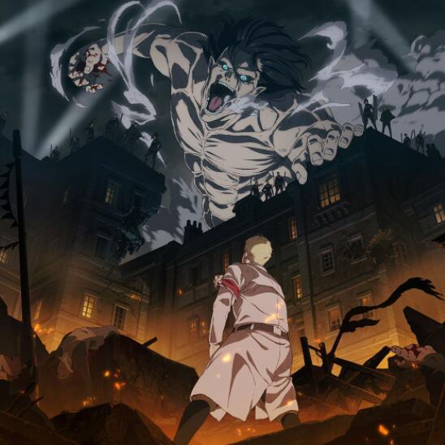
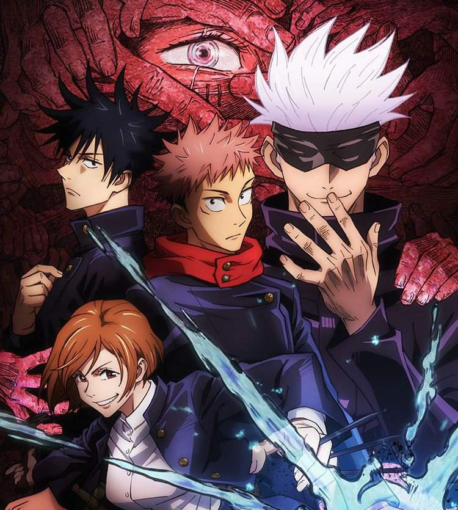
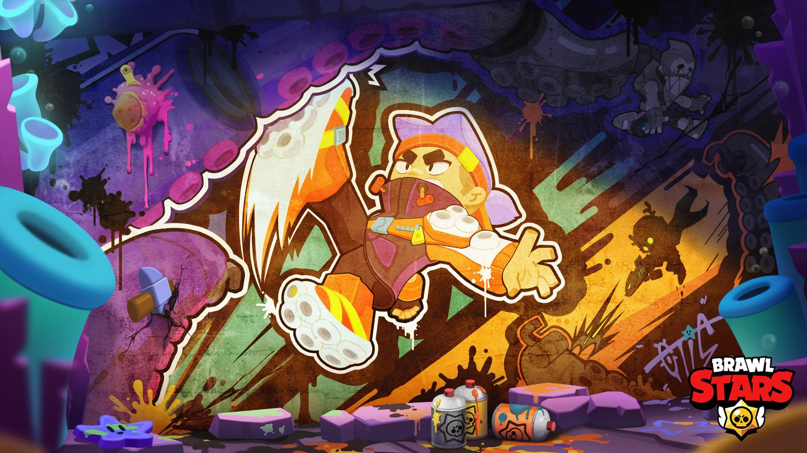
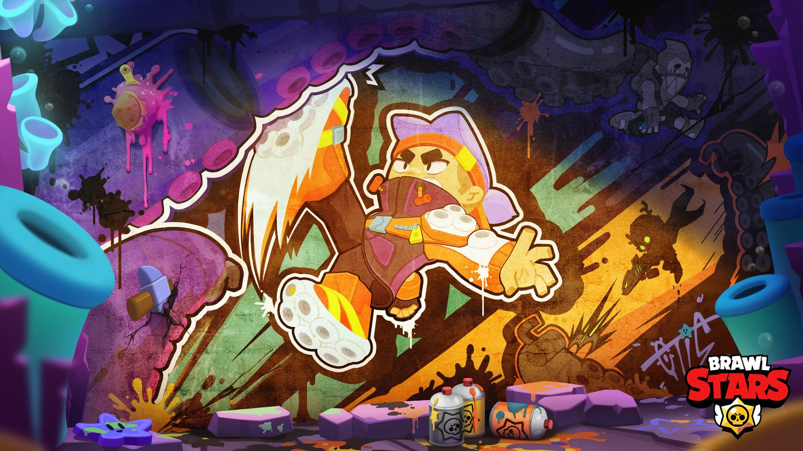
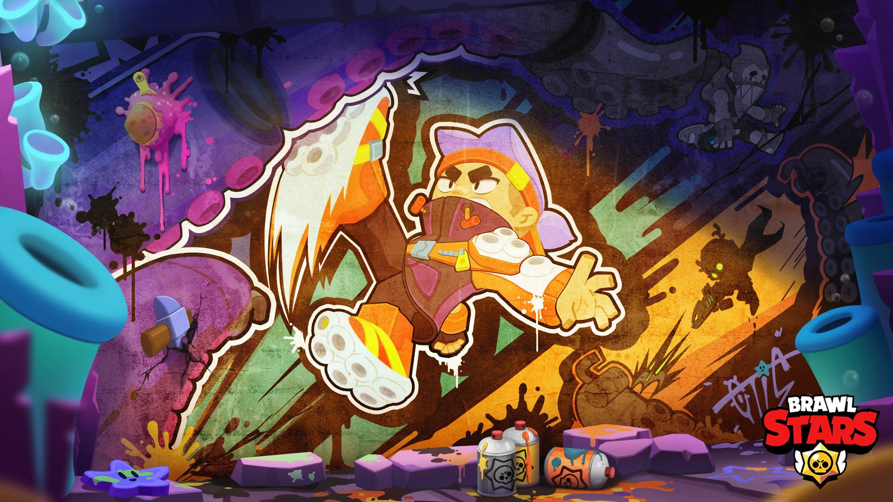
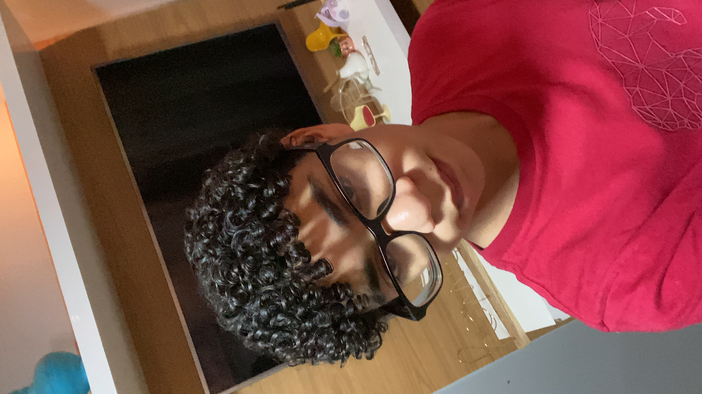

Sobre Mim
Sou Arthur, um entusiasta por tecnologia, design e desenvolvimento web. Gosto de criar interfaces modernas e funcionais, unindo criatividade com código limpo. Tenho experiência com HTML, CSS, JavaScript e estou sempre buscando aprender mais. Além da programação, tenho interesse por jogos, música, design digital e atividades ao ar livre.
Hobbys e Gostos
Hobbys
Gosto de desenhar, assistir animes, explorar lugares novos, e criar pequenos projetos artísticos com tecnologia e design.
Jogos
Tenho paixão por jogos digitais e competitivos, como League of Legends, Valorant e RPGs imersivos. Também curto jogos indie com boa narrativa.
Jogos e Animes Preferidos


 


Contato

Redes Sociais
Email: arthur@email.com
Instagram: @arthur.dev
Telefone: (11) 91234-5678